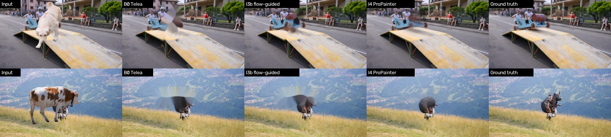

CIS 5810 Final Project Proposal · Option 1 (assembling existing modules) · October 9, 2026
| Group [#] | Daniel Zhang ([email]) · [member 2] ([email]) · [member 3] ([email]) |
| Code | github.com/Norrozo/5810finalproject — every number below is in results/results.csv and docs/experiment_log.md |
The user types what to remove (“remove the dog”); the system finds the object, tracks it through every frame, and fills the background so it disappears without blur or flicker. Audience: casual video creators who want to remove a photobomber or stray object without frame-by-frame tools such as After Effects. Goals: (1) remove one named object from a 5–10 s, 480p clip with no visible blur or flicker; (2) accept a text prompt, with a click as fallback; (3) measure every change against a fixed baseline; (4) contribute a method of our own (flow-guided temporal inpainting).
Evaluation without hand labels. Real videos have no ground truth for what is behind an object, so we build a synthetic benchmark: an object is cut from one DAVIS 2017 video with its annotation mask and pasted onto another. A perfect removal returns the untouched background video. The test set is 10 such clips built from DAVIS val videos (40–60 frames each), frozen before any results. Hyperparameters are tuned only on a separate dev set of 5 clips built from DAVIS train videos, so no video appears in both. Iterations that do not change segmentation reuse B0's SAM 2 masks, so fill methods are compared on identical masks.
Metrics. J&F: mask overlap (IoU) and boundary accuracy against the paste mask, as defined by DAVIS. PSNR mask: PSNR against the clean video inside the object region only, where the difficulty is. SSIM: perceptual structure. Flicker: mean change inside the region between consecutive frames after optical-flow alignment; the same measure on the clean video (mean 7.6) is the floor. Ground hit: text-prompt box IoU > 0.5 with the true box.
B0 = a click on frame 0 (placed automatically at the deepest point of the true mask) → SAM 2 (sam2.1-hiera-large) → per-frame OpenCV inpainting (Telea, radius 5). B0 tracks well (J&F 0.943; 0.96–0.99 on 9 of 10 clips) but fills with a visible blur: Telea spreads the hole's border colors inward, so large holes become a smear (PSNR mask 16.4 dB). Each frame is filled independently, so the smear changes every frame: flicker is 1.6–4.4× the clean video on every clip. The one tracking failure, libby (0.595), is a dog split in two by an occluder; one click tracks one half. SAM 2 takes about 97% of the 1.38 s/frame (Apple M5 GPU).
| Version | Change (one per iteration) | Ground hit ↑ | J&F ↑ | PSNR mask ↑ | SSIM ↑ | Flicker ↓ | s/frame ↓ |
|---|---|---|---|---|---|---|---|
| B0 | click + SAM 2 + Telea | – | 0.943 | 16.39 | 0.947 | 18.75 | 1.38 |
| I1 | mask refinement: drop specks, fill holes, dilate 5 px | – | 0.943 | 15.51 | 0.942 | 18.92 | 1.38 |
| I2 | text prompt via Grounding DINO instead of a click | 9/10 | 0.890 | 15.94 | 0.943 | 19.18 | 2.16* |
| I3 | our flow-guided inpainting (no hop cap) | – | 0.943 | 15.98 | 0.942 | 16.30 | 1.50 |
| I3b | I3 + hop cap of 5 frames (tuned on dev set) | – | 0.943 | 16.50 | 0.945 | 16.31 | 1.51 |
| I4 | ProPainter (ICCV 2023) | – | 0.943 | 21.14 | 0.969 | 9.22 | 5.43 |
Means over the 10 test clips. PSNR in dB. *I2's run was slowed by memory swapping on a 16 GB laptop; fixed afterwards, so its runtime is not a fair comparison.

| Date | Milestone | Deliverable |
|---|---|---|
| Oct 9 | Proposal | B0 + 4 iterations (done) |
| Oct 12–25 | First TA meeting | I1 on real clips; LPIPS; real-video eval set |
| Nov 6 | I5 re-detection | logged result vs I2 |
| Nov 20 | Midterm report | I5 + I6 speed + updated Colab |
| Dec 6 | Project Day | I7 multi-object; live demo; 5-min talk |
| Dec 10 | Final report | report, code, demo video, README |
| Workstream | Owner |
|---|---|
| Grounding + tracking (stages 1–2; I2, I5, I7) | [member] |
| Inpainting (stages 3–4; I1, I3, I4, I6) | [member] |
| Benchmark, metrics, demo (stage 5, Gradio, Colab) | [member] |
[Optional: e.g. guidance on evaluating removal quality on real videos without ground truth; GPU access beyond Colab's free tier.]
References. Ravi et al., SAM 2, 2024. Liu et al., Grounding DINO, 2023. Zhou et al., ProPainter, ICCV 2023. Xu et al., Deep Flow-Guided Video Inpainting, CVPR 2019. Farnebäck, Two-Frame Motion Estimation Based on Polynomial Expansion, 2003. Telea, An Image Inpainting Technique Based on the Fast Marching Method, 2004. Pont-Tuset et al., The 2017 DAVIS Challenge, 2017. Generative AI: Claude (Anthropic) wrote most of the code and ran the experiments with us; details and what was copied are in AI_USAGE.md.